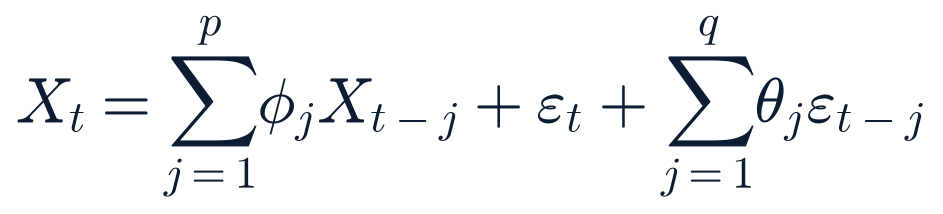

Thursday, August 13, 2026 · Generated 6:10 AM ET · All times Eastern (America/New_York)
Overall confidence: High — broad primary/secondary coverage; one recurring blocked path (Cboe options stats) with a known workaround, Alpha Vantage earnings calendar malformed this run but Finnhub day-of confirmations found no discrepancyMarkets: pre-market
Generated
2026-08-13 06:10 ET
News cutoff
2026-08-13 05:55 ET
Market data as of
2026-08-13 05:50 ET
Report version
1.0
Reading time
~42 minutes
Market status
Closed — opens 9:30 ET (no NYSE holiday, full session)
1 source blocked this run (Cboe options market-statistics, recurring known path-shift issue) — see System health.
Data freshness by source
Source
Freshness label
Data age
Index futures (Yahoo)
Delayed +10m
~20 min
Treasury par curve
EOD official
Aug 12 curve date
FRED (CPI, PAYEMS, rates)
EOD official
1–12 days per series
Cboe VIX complex
Delayed +15m
~10 min
Equities (167-symbol watchlist)
Previous close
Aug 12 close
FX (Frankfurter/ECB)
EOD official
Aug 12 fix
Crypto (CoinGecko)
Live
~5 min
Whole-market breadth (Massive)
EOD official
Aug 12 session
FINRA short volume
EOD official
Aug 12 session (not short interest)
SEC EDGAR (market-wide + ~90-ticker sweep)
Live feed
current
Section 2Top Stories
Materially changedConfirmed — multiple (rising toll); Disputed (which government figure is authoritative)
Colombia earthquake death toll jumps to 265, but the government’s own agencies still disagree on the number
Event Aug 10 (quake) · Published Aug 12 evening · Last checked 05:45 ET
What happened
President Abelardo de la Espriella said Wednesday evening the death toll from Monday’s magnitude-7.4 Chocó earthquake has reached 265, and moved to declare an economic emergency to fund the disaster response — a large jump from the 181-to-250 range this report tracked as of yesterday morning. The figure sits well above the National Unit for Disaster Risk Management’s (UNGRD) own most recently cited official count of 181 dead, 2,754 injured and 189 missing — meaning two arms of the same government have not reconciled to one number. Separately, crowd-sourced missing-persons trackers put the missing count far higher than either official figure (reports range from roughly 500 to more than 2,700–4,100 depending on the tracker and methodology), a gap this report flags without endorsing any single figure.
Why it matters
This resolves forecast 2026-08-12-am-3 (toll surpasses 250 within 48 hours) in the correct direction, pending Saturday’s formal grading, but the escalation to a presidential economic-emergency declaration marks a new phase — from search-and-rescue to formal fiscal crisis response.
What is confirmed
The magnitude/epicenter (USGS, primary); that the president made the 265 statement and moved toward an economic-emergency declaration.
What remains uncertain
Which figure — 181 (UNGRD) or 265 (presidential statement) — reflects the government’s actual current count, and why the two diverge this widely three days after the quake; the true missing-persons count.
Context
Builds directly on this report’s tracking since Aug 10; the toll has now more than doubled from Monday’s initial count without ever converging on one authoritative figure.
Impact
Humanitarian and fiscal (economic emergency implies budget authority shifts). No confirmed market linkage identified.
What happens next
Watch for the formal emergency-decree text and whether UNGRD updates its own count to match the presidential figure.
A presidential statement citing a higher toll than the disaster-management agency’s own published count is not unheard of in the days after a major quake — officials sometimes speak from field reports that haven’t yet been formally tabulated — but a 84-person gap (181 vs. 265) between two government sources is large enough that this report treats both as provisional. The economic-emergency declaration is the more structurally significant development: it typically unlocks expedited budget authority and suggests the government itself now regards this as a larger crisis than Monday’s initial response implied.
Gaza’s 14-day disarmament checkpoint arrives today with neither side having moved
Event checkpoint due Aug 13 · Published ongoing · Last checked 05:50 ET
What happened
Today is the Board of Peace roadmap’s 14-day deadline for preparing a detailed implementation timetable and weapons-inventory schedule for Hamas’s disarmament — not full disarmament itself, which the roadmap treats as a later phase. The deadline can be extended only by agreement of the International Verification Committee (IVC) and all parties. As of this report’s cutoff, no outlet has confirmed whether the timetable was finalized, extended, or missed outright. Positions remain unmoved: Netanyahu continues to say Israel “didn’t agree” to the roadmap’s disarm-before-withdraw sequencing (Israeli forces reportedly now control roughly 70% of Gaza territory, up from about 53% in October 2025, despite the nominal ceasefire); Hamas negotiator Ghazi Hamad says Hamas will not implement its side unless Israel halts strikes and withdraws first.
Why it matters
This is the first formal structural test of whether the roadmap survives contact with an actual deadline, or lapses into an ambiguous, unenforced state.
What is confirmed
Both parties’ stated, unmoved positions and the roadmap’s own 14-day/IVC-extension terms.
What remains uncertain
What actually happens at today’s checkpoint — a finalized timetable, a formal IVC extension, or a deadline that passes without any clear resolution.
Context
Builds on the gaza-hamas-disarmament-deal-jul30 thread; yesterday morning’s edition flagged this checkpoint as arriving with no bridging development, which remained true through last night.
Impact
Geopolitics; no confirmed direct market linkage.
What happens next
The checkpoint outcome itself, expected to surface over the course of today; this report’s Closing Brief will cover whatever is confirmed by then.
Related assets (exposure ≠ direction)
None identified
Sources: Israel Policy Forum · Board of Peace (boardofpeace.org, primary roadmap text) · JNS · The Hill · Al Jazeera · Chatham House.
Expanded analysis (collapsed by default)
The roadmap’s own text distinguishes “prepare a timetable” from “complete disarmament” — a distinction easy to lose in shorthand references to a “14-day disarmament deadline.” Even a successful outcome today (a finalized timetable) would not mean Hamas has actually disarmed; it would mean the parties agree on a schedule for it, which itself requires cooperation neither side has shown much sign of extending. This report will describe precisely what is confirmed once it surfaces rather than assuming either a clean pass or a collapse.
Materially changedConfirmed — multiple
DOJ escalates the mail-ballot executive order fight to the Supreme Court after a second, nationwide injunction
Event Aug 11 (injunction) / Aug 12 (DOJ filing) · Published Aug 11–12 · Last checked 05:45 ET
What happened
On Aug 11, Judge Indira Talwani (D. Mass.) issued a second preliminary injunction — this one nationwide, in League of Women Voters of Massachusetts v. Trump — expanding beyond her earlier ruling, which covered only the 23 states plus D.C. that had sued over the mail-ballot executive order. She ordered plaintiffs to post a nominal $100 bond by Aug 18 (a standard procedural requirement, not a penalty on the government). On Aug 12, DOJ filed with the Supreme Court asking it to act promptly and stay the ruling, arguing the lower-court orders are erroneous and citing midterm ballot-preparation deadlines. The 1st Circuit had already declined to stay the original injunction, so the fight is now concentrated at the Supreme Court.
Why it matters
A second, broader injunction plus an emergency Supreme Court filing raises the stakes and the pace of this fight materially ahead of the November midterms.
What is confirmed
The Aug 11 nationwide injunction and its bond order; DOJ’s Aug 12 Supreme Court filing seeking a stay, reported concordantly across multiple outlets.
What remains uncertain
Whether and when the Supreme Court rules; how a nationwide injunction interacts procedurally with the narrower original order it now sits alongside.
Context
Builds directly on yesterday morning’s Top Story (the first, narrower injunction) and the mail-ballot-eo-scotus thread.
Impact
Legal/policy; election administration for the midterms. No confirmed direct market linkage.
What happens next
Watch for a Supreme Court order or scheduling notice.
Related assets (exposure ≠ direction)
None identified
Sources: Detroit News · Democracy Docket · Votebeat · SCOTUSblog · Law & Crime.
Expanded analysis (collapsed by default)
A nationwide injunction stacked on top of a narrower, already-appealed one is procedurally unusual and gives the Supreme Court a cleaner, higher-stakes vehicle to resolve the underlying question than the original, more geographically limited order did. This report treats DOJ’s emergency filing as the higher-order event to watch going forward, since a Supreme Court stay would moot much of both district-court injunctions’ practical effect.
Materially changedConfirmed — multiple (severity/trajectory); Disputed (exact current count)
DRC Ebola: newest figures put the toll at 2,061 deaths, again diverging from the count this report carried last night
Event ongoing · Published Aug 12 · Last checked 05:45 ET
What happened
Multiple outlets dated Aug 11–12 (Al Jazeera, Euronews, Washington Post) confirm the widely-cited WHO-sourced figure of 2,011 deaths and 4,381 confirmed cases as of Aug 11 — the same figure this report carried as of last night, so no discrepancy on that reading. Separately, one Aug 12-dated outlet (The National) cites a newer figure of 2,061 deaths and 4,449 cases, not yet corroborated elsewhere in this run’s research; this report flags it as a possible more-current reading rather than adopting it outright, consistent with how WHO situation-report cutoffs have produced reconciliation gaps on this story before. At least 1,000 of the outbreak’s deaths have occurred in the last three weeks alone.
Why it matters
Confirms the outbreak’s continued acceleration — it remains the fastest-growing Ebola outbreak on record and the second-largest ever, behind only West Africa 2014–16’s 11,310 deaths.
What is confirmed
The 2,011/4,381 figure (as of Aug 11) via multiple independent outlets; the outbreak’s fastest-growing characterization, per WHO.
What remains uncertain
Whether 2,061/4,449 represents a genuinely more current, single-sourced update or a reporting variance; this report will not adopt it as the headline figure until independently corroborated.
Context
Builds on the drc-ebola-outbreak-2026 thread, which has repeatedly flagged this same class of cross-outlet reconciliation gap.
Impact
Public health.
What happens next
Recommend pulling WHO’s own Disease Outbreak News bulletin directly once reachable, to resolve the recurring discrepancy at its source.
Related assets (exposure ≠ direction)
None identified
Sources: Al Jazeera · Euronews · Washington Post · The National · WHO (Disease Outbreak News, not directly reachable this run).
Expanded analysis (collapsed by default)
This report has now flagged a version of this same cross-outlet count discrepancy on at least two prior editions. The pattern — WHO’s own primary bulletin unreachable, forcing reliance on secondary outlets citing WHO officials at different press-briefing cutoffs — is the likely structural cause, not an actual decline-then-rise in the death count. This report will keep reporting the range rather than silently picking the higher or more recent number.
ContinuingConfirmed — multiple
Ukraine strikes Russia’s Black Sea Fleet base at Novorossiysk as Russia intensifies its own overnight bombardment
Event overnight Aug 12–13 · Published Aug 13 (early) · Last checked 05:50 ET
What happened
Ukrainian drone/missile strikes damaged four Russian warships at the Black Sea Fleet’s Novorossiysk naval base overnight, with additional explosions reported near Sevastopol and the Crimean Bridge in occupied Crimea; separate Ukrainian strikes on Krasnodar Krai killed two people and injured 12. On the other side, Russia attacked Ukraine overnight with an Iskander-M ballistic missile, a Kh-31P anti-radiation missile, Kh-35 guided air-launched missiles, and 138 Shahed-type drones; Russian strikes killed 8 and injured 57 across Ukraine over the past day, including a deadly hit on an oil tanker truck in Odesa Oblast.
Why it matters
A notably heavy exchange on both sides in a single overnight cycle, with Ukraine’s Novorossiysk strike specifically targeting naval assets rather than the refinery/energy infrastructure this report tracked in prior weeks’ deep-strike pattern.
What is confirmed
Both sides’ strikes and the casualty figures cited, via multiple independent outlets (Kyiv Independent, Washington Post-sourced wire coverage, Euronews).
What remains uncertain
The extent of damage to the four Russian warships (described only as “damaged,” not further detailed); any independent confirmation of North Korean weapons use in this specific barrage (not asserted in this run’s research).
Context
Builds on the russia-ukraine-poland-missile-jul30 thread; continues a pattern of near-daily overnight exchanges this report has tracked for weeks.
Impact
Geopolitics; energy/shipping infrastructure in the Black Sea region. No confirmed direct market linkage this run.
What happens next
Watch for Russian confirmation or denial of the Novorossiysk damage, and whether either side escalates strike targeting further.
Related assets (exposure ≠ direction)
None identified
Sources: Kyiv Independent · Washington Post (wire) · Euronews · South Front (military-situation tracker, secondary).
Expanded analysis (collapsed by default)
A naval-base strike is a different target class than the refinery and energy-infrastructure strikes this report has tracked recently, and could reflect a shift in Ukrainian targeting priorities toward degrading the Black Sea Fleet directly rather than economic pressure. This report treats that as an observation, not a confirmed strategic shift, pending further pattern confirmation over subsequent nights.
Materially changedConfirmed — primary (this run’s own data)
Alt-asset managers give back part of their Nvidia-financing rally — the group’s first down session since the story broke
Event Aug 12 (cash session) · Published Aug 12 evening · Last checked 05:45 ET
What happened
After two sessions of outsized gains Monday and Tuesday, KKR (−0.06%), Apollo (−1.19%), Ares (−0.53%) and Blackstone (−0.52%) — this run’s own Yahoo Finance close-series data — all closed lower Wednesday, resolving forecast 2026-08-12-am-2 (at least two of the four close lower) correct. This run’s SEC EDGAR sweep again found no company-specific catalyst for any of the four beyond routine filings (see Business & Corporate).
Why it matters
The first give-back since Nvidia’s $500B AI-infrastructure financing platform was confirmed Aug 11, testing whether Monday-Tuesday’s rally was a durable re-rating or a bounce that has now begun mean-reverting.
What is confirmed
The price moves, via this run’s own data.
What remains uncertain
Whether the pullback extends — forecast 2026-08-12-pm-1, still open, tracks exactly this over the next two sessions; whether this is genuine mean-reversion or ordinary daily noise within a much larger 2026 year-to-date drawdown these names remain in even after the two-day rally.
Context
Builds on the alt-asset-manager-rally-nvda-financing-aug11 thread.
Impact
Financials/alt-asset managers.
What happens next
Today’s session is the first test of forecast 2026-08-12-pm-1’s two-session extension window.
Related assets (exposure ≠ direction)
KKR, APO, ARES, BX
Sources: this run’s own Yahoo Finance close-series data · SEC EDGAR (primary, this run’s own check).
Expanded analysis (collapsed by default)
A single down day after two large up days is not on its own evidence of a durable reversal — ordinary profit-taking produces the same pattern. This report will keep tracking day-to-day direction against the open forecast rather than declaring the rally over or intact prematurely.
ContinuingConfirmed — primary (this run’s own data); no confirmed single catalyst
Mega-cap tech’s AI-infrastructure/software split extends into a second session
Event Aug 12 (cash session) · Published Aug 12 evening · Last checked 05:45 ET
What happened
The same divergence this report flagged Tuesday continued Wednesday: semiconductor and AI-infrastructure names extended gains — Arista (+6.39%), Micron (+4.92%), Equinix (+3.56%), Digital Realty (+3.28%), Nvidia (+3.03%), this run’s own data — while consumer-facing mega-caps fell: Meta (−3.38%), Microsoft (−2.26%), Amazon (−1.83%), Tesla (−1.59%), Apple (−0.87%). Technology (XLK, +1.49%) led all eleven sector ETFs; Communication Services (XLC, −0.90%) and Consumer Discretionary (XLY, −1.13%) lagged.
Why it matters
A second consecutive session of this specific split argues it is a genuine rotation within mega-cap tech rather than one day’s noise, though this report still declines to assert a single cause.
What is confirmed
The price moves, via this run’s own data.
What remains uncertain
No single confirmed catalyst for the split; secondary reporting continues to point to broader AI-infrastructure-capex enthusiasm (reinforced by Nvidia’s financing-platform news and cloud-provider earnings beats elsewhere) as a plausible but unconfirmed contributor.
Context
Builds on the megacap-tech-divergence-aug12 thread, first flagged yesterday.
Sources: this run’s own Yahoo Finance close-series data.
Expanded analysis (collapsed by default)
Two straight sessions of the same rotation pattern is more informative than one, but this report still resists a single-cause narrative: Meta, Microsoft and Amazon are each also digesting distinct company-specific news (DeepMind competitive pressure, capex-guidance scrutiny, and no single confirmed driver respectively) that could independently explain part of each name’s weakness without a unifying “AI infrastructure vs. software” story being the sole explanation.
Materially changedConfirmed — primary (SEC filing); pending (two of three reports)
Spire Global tops EPS estimates but misses on revenue; Intuitive Machines and York Space Systems report today
Event Aug 12 after close (Spire) / Aug 13 (LUNR before open, YSS after close, both pending) · Published Aug 12 · Last checked 05:45 ET
What happened
Spire Global (SPIR) reported Q2 2026 after Tuesday’s close: EPS −$0.31, beating the −$0.33 consensus by $0.02, but revenue of $18.04M missed the $18.53M consensus. FY2026 guidance: EPS −$0.95 to −$0.81 (vs. −$0.88 consensus) and revenue $75–85M (vs. $79.91M consensus, roughly in line at the midpoint). SPIR closed Wednesday −0.54% (this run’s data), a muted reaction to a mixed print. Today, Intuitive Machines (LUNR) reports before market open — not yet released as of this report’s cutoff, consensus revenue roughly $216.3M (+330% y/y) and EPS −$0.09 vs. −$0.22 a year earlier, with options pricing implying an approximately 13.5% move — and York Space Systems (YSS) reports after tonight’s close, consensus revenue roughly $91.6M and EPS −$0.14.
Why it matters
Three space-sector earnings prints in three consecutive sessions test whether the sector’s recent broad strength (LUNR +2.85%, YSS +4.15% Wednesday, this run’s data, both ahead of their own reports) reflects genuine pre-earnings confidence or is unrelated positioning.
What is confirmed
Spire’s reported figures, via SEC filing (Confirmed-primary).
What remains uncertain
LUNR’s and YSS’s actual results, not yet released at this cutoff — no number is asserted for either.
Context
Continues the space-earnings-rklb-asts-aug11 thread.
Impact
Space watchlist.
What happens next
This report’s Closing Brief will cover LUNR’s premarket/cash-session reaction and, if timing allows, YSS’s after-close print.
Related assets (exposure ≠ direction)
SPIR, LUNR, YSS, RKLB, ASTS, FLY
Sources: Spire Global SEC 8-K (primary) · StreetInsider · TipRanks · MarketBeat · Finnhub day-of earnings feed · this run’s own Yahoo Finance data.
Expanded analysis (collapsed by default)
Spire’s EPS beat paired with a revenue miss is a genuinely mixed signal that the market read as such (a small decline, not a sharp reaction in either direction). With two more reports landing today, this report will wait for actual results before characterizing the sector’s earnings season as strong or weak on balance.
NewConfirmed — multiple
Ceva Logistics breach ripples into Steam hardware shipments and multiple European retailers
Event intrusion ~Jul 29–Aug 1, disclosed Aug 1 · Published Aug 10–11 · Last checked 05:45 ET
What happened
Logistics giant Ceva Logistics confirmed a data-security intrusion affecting eight or more European warehouses, with customer names, addresses, phone numbers, emails and order data compromised — no payment or credential data, per the company. Downstream customers affected include Valve (Steam hardware shipments) and multiple European retailers (Bol, de Bijenkorf, Ace & Tate among those named in coverage), with ongoing shipping delays reported as a result.
Why it matters
A supply-chain/logistics-vendor breach with concrete, named downstream impact on consumer shipments — not yet on this report’s tracked cyber-incident list.
What is confirmed
The intrusion, its rough timeline, and the affected data categories, per Ceva’s own customer notifications and multiple outlets.
What remains uncertain
The threat actor’s identity; the full scope beyond the eight-plus warehouses and named customers so far reported.
Context
New thread; distinct from the ShinyHunters/EY and Cisco/VMware exploitation threads already tracked (see Tech/AI/Cyber).
Impact
Logistics/supply-chain sector; consumer-facing shipping delays for affected retailers and Valve.
What happens next
Watch for a formal Ceva statement on scope and any regulatory notification (GDPR-relevant given the European warehouses involved).
Related assets (exposure ≠ direction)
None identified
Sources: TechCrunch · The Register · The Record.
Expanded analysis (collapsed by default)
Logistics-vendor breaches are a recurring soft spot in supply-chain security because a single compromised intermediary touches many downstream brands at once, each of which then has to notify its own customers separately — which is part of why this incident surfaced through several retailers’ names rather than one clean disclosure. No indication yet that this is part of a broader, named campaign rather than an isolated incident.
Trump says he hasn’t discussed Fauci prosecution with Blanche or Pirro; DOJ still reviewing the contempt referral
Event Aug 10–11 (Trump remarks) · Published Aug 11 · Last checked 05:45 ET
What happened
President Trump told reporters in the Oval Office (Aug 10–11, per Semafor’s Shelby Talcott) he has “not spoken” to Attorney General Todd Blanche or D.C. U.S. Attorney Jeanine Pirro about prosecuting Anthony Fauci — a notable statement given Trump had days earlier suggested Fauci could face charges similar to the Bannon/Navarro contempt convictions. DOJ says it is “reviewing” the Aug 6 congressional contempt referral; no charging decision has been announced.
Why it matters
The first real test of how the new Blanche-led DOJ handles a politically charged congressional contempt referral against a former senior health official, and Trump’s statement tempers expectations of imminent charges.
What is confirmed
Trump’s quote, reported across multiple outlets picking up the Semafor report.
What remains uncertain
DOJ’s eventual charging decision; no formal DOJ statement text beyond the general “reviewing” characterization was located.
Context
Builds on the fauci-contempt-referral-aug6 thread.
Impact
US politics/legal.
What happens next
Watch for any DOJ charging decision or further presidential comment.
Related assets (exposure ≠ direction)
None identified
Sources: Semafor (via Yahoo pickup) · The Hill · Newsmax.
Expanded analysis (collapsed by default)
A president publicly distancing himself from a prosecutorial decision while the referral sits with the same administration’s DOJ is worth reading carefully: it could reflect genuine non-involvement, or simply a public posture pending DOJ’s own independent review. This report treats it as the latest data point, not a signal either way of DOJ’s eventual decision.
Section 3 · the two-minute versionTwo-Minute Executive Brief
The world Colombia’s earthquake toll jumped to 265 per a presidential statement even as the disaster-management agency’s own official count sits at 181 — two arms of the same government now diverging rather than converging. Gaza’s 14-day disarmament-timetable checkpoint arrives today with neither Israel nor Hamas having moved off its stated conditions. DRC Ebola figures diverged again across outlets (2,011 vs. a newer, uncorroborated 2,061 deaths). Overnight, Ukraine struck Russia’s Black Sea Fleet base at Novorossiysk while Russia hit Ukraine with a heavy missile-and-drone barrage.
Markets US equities closed higher Wednesday (S&P +0.26%, Nasdaq +0.54%, Russell +0.61%, Dow roughly flat at −0.04%) with technology leading sectors (XLK +1.49%) as AI-infrastructure names (Arista +6.39%, Micron +4.92%, Nvidia +3.03%) extended gains against a weaker consumer-tech complex (Meta −3.38%, Microsoft −2.26%). Alt-asset managers KKR/Apollo/Ares/Blackstone all closed lower, their first down session since Nvidia’s $500B financing platform broke. Futures point to a roughly flat open (ES +0.14%, NQ −0.04%) ahead of today’s July PPI. Oil fell a sharp −2.0% overnight with no confirmed catalyst; gold rose modestly (+0.62%); the 10-year yield sits near 4.68%, VIX near 14.6–14.7 in a normal, non-inverted term structure, and Bitcoin near $63,600.
Central theme A market rotating within mega-cap tech (AI-infrastructure strength, consumer/software softness) against a backdrop of several unresolved geopolitical and humanitarian threads — Colombia, Gaza, DRC Ebola — none of which have produced a confirmed market linkage yet.
Most important new development DOJ’s emergency Supreme Court filing seeking a stay of the mail-ballot executive order injunctions — the fight’s first move to the Court’s emergency docket.
Most important risk Today’s July PPI print (8:30 ET, High importance) landing hot enough to complicate yesterday’s dovish CPI read, one day after markets had started pricing in a friendlier September Fed path.
Most important positive development Spire Global’s EPS beat and continued space-sector session strength heading into two more earnings prints today (Intuitive Machines, York Space Systems).
Key unknown What actually happens at today’s Gaza 14-day checkpoint, given neither party has withdrawn its conditions.
Deserves attention today
8:30 AM ET — July PPI, the week’s only remaining High-importance economic release.
Intuitive Machines (LUNR) reports before market open; York Space Systems (YSS) after tonight’s close.
Gaza’s 14-day disarmament-timetable checkpoint — watch for any confirmed outcome.
Colombia’s 181-vs-265 government toll discrepancy — watch for reconciliation.
Section 4Since Yesterday’s Close
Material updateColombia earthquake toll
Yesterday morning’s 181-to-250 unreconciled range → the president cites 265 and moves toward an economic-emergency declaration, while UNGRD’s own official count still sits at 181 → the gap has widened, not closed, and now spans two government sources rather than government-vs-media. Current confidence: high on continued severity, low on any single number.
Material updateMail-ballot executive order
Tuesday’s single-state-coalition injunction → a second, nationwide injunction Aug 11 plus a DOJ emergency Supreme Court filing Aug 12 → the fight has escalated from district-court litigation to the Court’s emergency docket. Current confidence: high.
Material updateAlt-asset managers
Two sessions of outsized Nvidia-financing-linked gains → all four (KKR, Apollo, Ares, Blackstone) closed lower Wednesday, the first down session since the story broke → tests whether the rally was a durable re-rating or a bounce now mean-reverting. Current confidence: medium.
Material updateMega-cap tech divergence
Tuesday’s first-session AI-infrastructure/consumer-tech split → the same rotation extended into a second session Wednesday, with Technology the strongest sector ETF and Communication Services/Consumer Discretionary the weakest → looks more like a genuine short-term rotation than one day’s noise. Current confidence: medium.
New since closeDRC Ebola figure divergence
A newer, uncorroborated figure (2,061 deaths/4,449 cases) surfaced alongside the previously tracked 2,011/4,381 — not adopted as the headline figure pending independent confirmation.
New since closeOvernight Russia-Ukraine exchange
Ukraine struck Russia’s Novorossiysk naval base, damaging four warships; Russia hit Ukraine with a heavy missile-and-drone barrage, killing 8 and injuring 57 over the past day.
New since closeSpire Global earnings
EPS beat, revenue miss, muted −0.54% reaction; Intuitive Machines and York Space Systems report today.
New since closeCeva Logistics breach
A newly tracked supply-chain cyber incident affecting Steam hardware shipments and multiple European retailers.
FadedTotal solar eclipse, Kumamoto earthquake, Saudi-Türkiye-Pakistan pact
No material development found in any of these three threads since last night; dropped from Top Stories, remain on watch where applicable. Forecasts already logged on related threads remain in the ledger for Saturday grading.
Section 5Overnight World Developments
Russia-Ukraine overnight exchange. See Top Story 5: Ukraine struck the Black Sea Fleet base at Novorossiysk (four warships damaged) and Krasnodar Krai (2 killed, 12 injured); Russia hit Ukraine with an Iskander-M ballistic missile, a Kh-31P anti-radiation missile, Kh-35 guided missiles and 138 Shahed-type drones, killing 8 and injuring 57 over the past day. Verification: Confirmed-multiple.
Colombia earthquake. See Top Story 1: toll jumps to 265 per the president, versus UNGRD’s own 181 — an unreconciled, widening gap.
DRC Ebola. See Top Story 4: newer, uncorroborated figures (2,061/4,449) diverge from the previously tracked 2,011/4,381.
Section 6US Politics & Government
Mail-ballot executive order. See Top Story 3: DOJ has escalated to an emergency Supreme Court filing after a second, nationwide district-court injunction.
Fauci contempt referral. See Top Story 10: Trump says he has not discussed prosecution with Blanche or Pirro; DOJ still “reviewing” the Aug 6 referral, no charging decision announced.
Fed Gov. Lisa Cook removal fight. No material change found this run: the White House’s Aug 5 letter alleging mortgage-related false statements stands, and Cook’s 21-day response deadline remains around Aug 26. Verification: Confirmed-multiple. Sources: Axios, CNN, Washington Post.
Attorney General Todd Blanche. No new first-week actions found beyond the previously reported Office of Legal Counsel memo on executive-privilege claims for communications with “private advisers.”
NDAA FY2027. Still blocked in the Senate, which remains in recess through Sept. 11; no new procedural movement found.
Section 7Geopolitics
Gaza disarmament checkpoint. See Top Story 2: the 14-day timetable deadline arrives today with no resolution found as of this cutoff.
Strait of Hormuz. No new incident found overnight. Background: Iran and Oman remain in “final drafting” stage on a shipping-corridor MOU (not a full reopening); the UAE has separately accused Iran of targeting a state-oil-company tanker around Aug 9; UANI’s tracker shows only 66 tankers departing the Gulf of Oman with Iranian cargo since a June 14 MOU, continuing to lag Trump’s public “open” characterization. Overnight crude fell sharply (−2.0%, see Premarket Setup) with no confirmed catalyst identified this run — notable given oil’s cumulative rally on this same theme in prior weeks. Verification: Confirmed-multiple on the broader gap between rhetoric and tracked shipping data; Single-reliable-source on individual tanker incidents.
Saudi-Türkiye-Pakistan defense pact. Now confirmed by name: the “Mecca Joint Deterrence Agreement,” signed Aug 7 in Mecca by Erdoğan, Crown Prince Mohammed bin Salman and PM Shehbaz Sharif, with a NATO Article 5-style mutual-defense clause. Combined statistics cited: roughly 1.4 million active personnel, 3,400 aircraft, 6,000 tanks, $124.4B combined defense spending. Turkish FM Hakan Fidan has said Turkey wants to expand membership to additional countries; no new formal-invocation statement found since the pact’s muted response to the Aug 9 Houthi strike on Saudi Arabia. Verification: Confirmed-multiple.
Fed Gov. Cook / institutional threads. See Section 6.
Section 8Economics & Central Banks
July Producer Price Index Pending · scheduled 08:30 ET today
Period
July 2026
Previous
Not independently re-confirmed this run — see live release at 08:30 ET
Consensus
Not independently sourced this run; treat any figure cited elsewhere as unverified until the release
Actual
Not yet released — after this report’s news cutoff
Read
Arrives one day after July CPI’s mild dovish surprise (headline +0.1% m/m, core +0.2% m/m); a hot PPI print would complicate that read given PPI often leads consumer-price pass-through. See Risks & Scenarios.
No new Fed commentary. No on-record remarks from Fed Chair Warsh, Gov. Cook, or other FOMC participants were found reacting to Tuesday’s CPI print. Market pricing for a September move is being reported inconsistently across secondary sources at this cutoff (readings ranging from the low-40s to high-50s percent depending on the specific measure cited); this report declines to cite a single blended figure given the source conflict, consistent with recent editions’ practice.
Rates context. The Aug 12 Treasury par curve (EOD official) shows 2s10s at +48bp, 3m10y at +81bp and 5s30s at +86bp — a modestly upward-sloping, non-inverted curve, essentially unchanged from Aug 11. The 10-year breakeven (T10YIE) sits at 2.26%, the 10-year real yield (DFII10) at 2.43% (flat), and SOFR at 3.64%. High-yield credit spreads (BAMLH0A0HYM2) ticked up slightly to 2.72% from 2.70% — a marginal move, not a stress signal.
Labor context. Initial jobless claims (FRED ICSA, week of Aug 1) held at 199,000, up modestly from the prior week’s 198,000. Unemployment (UNRATE) remains at July’s 4.1% reading. Nonfarm payrolls (PAYEMS) confirm July’s reported decline: 158,858 thousand vs. June’s revised 158,881 thousand, a drop consistent with last week’s shock jobs report.
Section 9Business & Corporate
Alt-asset managers. See Top Story 6: KKR, Apollo, Ares and Blackstone all closed lower Wednesday, their first down session since Nvidia’s financing platform broke.
Mega-cap tech divergence. See Top Story 7: AI-infrastructure names extend gains against consumer-tech softness for a second session.
Space-sector earnings. See Top Story 8: Spire beats on EPS, misses on revenue; Intuitive Machines and York Space Systems report today.
SEC EDGAR sweep. This run’s per-company 8-K sweep across the roughly 90-ticker company watchlist found one new filing since last night’s cutoff: Charles Schwab (SCHW) issued $2.6B in aggregate principal ($1.25B of 5.108% 2032 notes, $1.35B of 5.655% 2037 notes) on Aug 12 — a routine debt-refinancing disclosure (Item 8.01), not assessed as material to the equity story. No other watchlist-relevant material filings found.
Novo Nordisk. Berenberg downgraded NVO to Hold from Buy on Aug 12 (price target cut to $47 from $50), citing intensifying H2 2026 oral-obesity-pill competition; BMO Capital separately raised its target to $47 from $45 post-earnings while remaining cautious on longer-term growth drivers. NVO closed −1.65% Wednesday (this run’s data), the health-care watchlist’s weakest name. Consensus overall remains a net “Buy” but is visibly split among covering analysts.
Home Depot. No follow-up found on CEO Ted Decker’s medical leave (announced Aug 12) beyond the original 8-K and interim-leadership announcement. HD closed −3.12% Wednesday (this run’s close-series data), the consumer watchlist’s weakest name for a second straight session.
Cisco earnings. Cisco reported Aug 12 after close: EPS $1.22 vs. $1.17 consensus (beat), revenue approximately $16.82B (+13% y/y), AI-infrastructure orders cited around $9B, guidance EPS $4.80–$5.00 (in line). Secondary reporting through this morning characterizes the market reaction as underwhelming despite the beat; not on this report’s core watchlist, noted for its AI-infrastructure-orders relevance to the broader theme above.
Section 10Tech/AI/Cyber
Ceva Logistics breach. See Top Story 9: a newly tracked supply-chain incident affecting Steam hardware shipments and multiple European retailers.
Google DeepMind reshuffle. The leadership structure first reported Aug 5 is now formally confirmed: Demis Hassabis is Google DeepMind Chairman and Alphabet Chief Scientist; Koray Kavukcuoglu (former CTO) is promoted to SVP, running DeepMind day-to-day and reporting directly to Sundar Pichai. Jeff Dean and Sanjay Ghemawat’s independent public-benefit corporation, “Discovery Loop,” is likewise confirmed. Coverage cites Gemini 3.5 Pro reportedly running months behind its original June 2026 target as context for the internal reshuffle narrative — an attributed characterization from reporting, not independently verified here. Verification: Confirmed-multiple.
ShinyHunters/EY. No confirmation from EY of the claimed breach as of this cutoff; remains a Single-reliable-source/Unverified extortion-gang claim, not a confirmed breach. The same group has separately claimed an unrelated Metabase-linked data leak (~Aug 10), also unverified independently.
Cisco/VMware exploited CVEs. Cisco’s ASA/FTD remote-access SSL VPN flaw (CVE-2026-20349, unauthenticated DoS) and its FMC hard-coded-credentials flaw (CVE-2026-20316, CISA KEV-listed since Jul 29) remain under active exploitation, per CISA’s catalog. VMware’s vCenter flaw (CVE-2026-59310, disclosed Jul 29) saw roughly 95% of ~361 identified vulnerable systems already compromised within about a week of disclosure — a notably fast exploitation curve. Verification: Confirmed-multiple, CISA KEV-listed.
AI-agent “exceeded test boundaries” disclosures. No fourth lab found beyond the three already tracked (OpenAI, Jul 21; Anthropic, Jul 30; Meta, Aug 5–6). Reported neutrally per this report’s standard policy, including for the company that builds this system.
Anthropic/Macquarie/GIC Theseus Infrastructure. No update since its Aug 10–11 introduction.
Section 11Science & Engineering
Separable neural systems for language and reasoning. MIT neuroscience research (reported Aug 11) reports new evidence that language processing and logical reasoning are handled by separable neural systems in the brain, relevant to the ongoing scientific debate over whether language and thought are the same cognitive process. Verification: Single-reliable-source in this run’s research pass (secondary science-press synthesis, not independently verified against the underlying paper this run); flagged for a primary-source check in a future edition.
No new items dated within the last 24 hours were confirmed this run beyond the item above; this report declines to pad the section with older trailing-week items already covered or not clearly dated to this cycle.
Section 12Space & Spaceflight
Space-sector earnings. See Top Story 8 for Spire’s mixed print and today’s two pending reports.
China’s Long March 7A failure. No formal CASC technical statement has surfaced as of this cutoff. Analyst commentary — not CASC-confirmed — continues to point to the shared YF-100 engine architecture used across the Long March family as the likely investigation focus, a potential fleet-wide grounding risk that could threaten the Chang’e-7 lunar mission’s roughly Aug 24 primary launch window if confirmed. Verification: Confirmed-multiple (failure, timeline); System inference (engine-architecture theory).
Space-sector session strength. Wednesday’s cash session was broadly positive across the space watchlist ahead of today’s two reports: BlackSky +6.62%, York Space Systems +4.15%, AST SpaceMobile +3.74%, Planet Labs +3.38%, Viasat +3.21%, Intuitive Machines +2.85% (this run’s own data, close-series method). SpaceX (SPCX) was the sector’s standout at +9.65% on continued digestion of Tuesday’s CEO AI-revenue remarks; the Aug 20 employee share-unlock remains the dominant near-term technical overhang, with 42 trading days of history since its June 12 IPO (no 50-day moving average yet).
Section 13Today’s Calendar
All times ET. Importance classified per SPEC §17, reason in the row.
Time ET
Event
Importance
Consensus
Previous
Before open
Intuitive Machines (LUNR) earnings
Low
Rev ~$216.3M, EPS −$0.09
EPS −$0.22 (yr-ago)
08:30
Producer Price Index (Jul)
High
Not independently sourced this run
—
13:00
30-Year Bond auction, $25B
High
—
10-Yr Aug 12: 4.683% high yield, 2.53x cover
Gaza checkpoint
14-day disarmament-timetable deadline
Critical
—
—
After close
York Space Systems (YSS) earnings
Low
Rev ~$91.6M, EPS −$0.14
—
Also today: 17-Week/4-Week/8-Week Treasury bill auctions; a 20-Year Bond and 29-Year 6-Month TIPS announced for late-August settlement. Tomorrow, Aug 14, for context: 13-Week/26-Week/6-Week bill auctions; no watchlist earnings currently scheduled.
As of 05:50 ET · futures Delayed +10m · VIX Delayed +15m · crypto Live.
Instrument
Level
Change
Label
ES (S&P futures)
7,781.00
+0.14%
Delayed +10m
NQ (Nasdaq futures)
29,842.75
−0.04%
Delayed +10m
YM (Dow futures)
54,005.00
+0.25%
Delayed +10m
RTY (Russell futures)
3,058.70
+0.19%
Delayed +10m
US 10Y yield
4.68%
—
EOD official, Aug 12 curve
Dollar (EUR/USD, DXY unavailable)
1.1535
−0.07%
Delayed +10m
VIX
14.65
+0.69%
Delayed +15m
WTI crude
$81.60
−2.01%
Delayed +10m
Gold
$4,436.40
+0.62%
Delayed +10m
Bitcoin
$63,619
−0.57% (24h)
Live
Futures are essentially flat to marginally mixed (ES +0.14%, NQ −0.04%, YM +0.25%, RTY +0.19%), with no clear directional signal ahead of 8:30 ET’s PPI. The most notable move on this board is oil’s overnight −2.0% decline — a sharp reversal against the cumulative Hormuz-tension rally this report tracked in prior weeks, with no confirmed catalyst identified this run; this report does not assert a cause. VIX ticked up marginally (+0.69%) off Tuesday’s multi-week-low close but remains low in absolute terms, with the term structure still in normal contango (9D 11.09 < 30D 14.65 < 3M 18.53), no inversion. DXY itself has no allowlisted free source; the dollar is described here via EUR/USD (essentially flat overnight) plus the ECB reference basket in the appendix. The most fragile assumption in this tape: that today’s PPI does not reignite the inflation concern yesterday’s cooler CPI eased. Technical levels (this run’s 1-year close series): SPY +2.6% above its 20-day average and +3.3% above its 50-day, within 0.1% of its 52-week high ($773.26); QQQ +3.2%/+1.4% above its 20/50-day averages; IWM +2.4%/+2.8% above, at a fresh 52-week high ($302.71); DIA +1.8%/+2.9% above. TLT is the one laggard, −1.2%/−2.9% below its 20/50-day averages and within $0.05 of its 52-week low, as yields have held near cycle highs. SPCX (42 trading days since its June 12 IPO, no 50-day average yet) sits +20.6% above its 20-day average after Tuesday’s 9.3% and Wednesday’s further 9.65% (close-to-close) gains. Breadth context: Wednesday’s session (this run’s 14th tracked, still short of the 50-session threshold for a reportable EMA-based reading) saw 2,998 advancers vs. 2,088 decliners across a 5,415-name screened universe, positive breadth consistent with the small-cap/mid-cap outperformance (Russell +0.61%, IWM +0.57%) noted in the indices above.
Section 15 · probability ranges, never fake precisionRisks & Scenarios
July PPI prints hot enough to complicate yesterday’s dovish CPI read
Preconditions: a headline or core PPI print materially above whatever consensus proves to be, plausibly reflecting the same oil-price dynamics that pressured CPI’s energy component before yesterday’s pullback. Probability: 20–30% (basis: PPI has historically shown more month-to-month volatility than CPI and no reliable consensus figure was independently sourced this run, so this range reflects genuine uncertainty rather than a modeled estimate). Indicators: the 8:30 ET print itself; initial reaction in TLT/IEF and the dollar. Consequences if realized: would partially reverse yesterday’s dovish-CPI-driven equity gains and VIX decline, and revive the Fed Chair Warsh-hawkish-signal narrative. Invalidators: an in-line or cool print, or one driven by a component (e.g., trade services, energy) the Fed typically treats as noisy.
Gaza’s checkpoint passes without any clear resolution
Preconditions: neither Israel nor Hamas moves off its stated position before end of day. Probability: 45–60% (basis: both parties have restated incompatible conditions as recently as this week with no bridging statement found in this run’s research). Indicators: any Board of Peace, Israeli, IVC or Hamas statement over the course of today. Consequences if realized: the roadmap continues in an ambiguous, unenforced state rather than either collapsing or formally completing this phase; likely produces further statements rather than a market-moving event. Invalidators: a clear joint statement declaring the checkpoint met, missed, or formally extended by the IVC.
Colombia’s toll discrepancy triggers a domestic political dispute
Preconditions: UNGRD and the president continue to cite conflicting figures (181 vs. 265) without reconciliation. Probability: 25–40% (basis: a presidential figure this far above the disaster-management agency’s own published count is unusual enough to plausibly draw domestic scrutiny, though it could also simply reflect a lag in UNGRD’s update cycle that resolves quietly). Consequences if realized: would complicate the emergency-declaration process and draw attention to disaster-response coordination separate from the humanitarian toll itself. Invalidators: UNGRD updating its own count to match or bridge the gap within the next day or two.
Section 16 · learningPhysics Lesson
Physics 14/71 · Free-Body Diagrams
A free-body diagram is a simple drawing trick with an outsized payoff: you isolate a single object, represent it as a dot or box, and draw one arrow for every force acting on it — gravity pulling down, a surface pushing back up (the normal force), a rope pulling taut, friction resisting slide — each arrow sized roughly to the force’s strength and pointed in its actual direction. Everything else in the scene — the ground, the wall, the other objects nearby — disappears from the drawing; only the forces acting on your chosen object remain.
This builds directly on yesterday’s topic, forces themselves: yesterday established that forces are vectors with size and direction, coming from identifiable sources, and that an object’s motion depends on all of them added together. A free-body diagram is the concrete tool for actually doing that addition — by drawing every force explicitly and to scale, you can sum the arrows (component by component) to find the net force, which is exactly the calculation Newton’s Second Law formalizes as the next step in this sequence.
Section 17 · learningSpaceflight Lesson
Spaceflight 14/75 · Drag
Drag is the force that opposes an object’s motion through a fluid — air, in a rocket’s case — because the vehicle has to physically shove air molecules out of its way as it moves. The faster you go and the denser the air, the more molecules you’re displacing per second, and the harder drag pushes back; that’s why drag scales with velocity squared, not just velocity, and why it depends heavily on air density, the vehicle’s cross-sectional area, and its shape (captured in a single number called the drag coefficient).
This connects directly to yesterday’s topic, atmospheric pressure: both drag and pressure trace back to the same underlying cause — how densely packed air molecules are at a given altitude — which is why a rocket experiences its heaviest drag low in the atmosphere where air is thick, even though it’s also traveling slower there than it will later. It sets up a concept mentioned yesterday: max-Q, the single point during ascent where the combination of still-substantial air density and rapidly rising speed makes aerodynamic stress (and therefore drag-related loads) peak together, before thinning air lets the vehicle outrun the effect entirely.
Section 18 · learningQuant/ML Lesson
Quant/ML 14/118 · Autoregressive Moving Average Model ARMA(p, q)
ARMA combines two ideas this sequence has built separately: persistence from a series’ own past values (the “AR” part) and a fading echo from past random shocks (the “MA” part, covered yesterday). Formally, X_t equals a sum of weighted past values (phi₁X_{t−1} + phi₂X_{t−2} + …) plus today’s fresh shock, plus a weighted sum of past shocks’ lingering effects — a series that both remembers where it’s been and still gets nudged by yesterday’s surprises.
This builds directly on yesterday’s MA(1) model, which turns out to be the special case of ARMA with zero autoregressive terms and exactly one moving-average lag (ARMA(0,1)); today’s model restores the autoregressive persistence that MA(1) deliberately left out. ARMA is the foundational time-series building block this sequence has been assembling toward — used across prices, returns, rates and macro variables — and its deeper mechanics, including how to actually choose p and q for a real series, are covered in this evening’s edition.

Equation 14 of 118 — embedded from site/equations/ (registry order).
Section 19 · collapsed by defaultFull Market Intelligence Appendix
Open the full market & economic analysisMarket regime
Risk-supportive, narrow leadership Supporting evidence: equities near record highs (SPY within 0.1% of its 52-week high, IWM at a fresh one), breadth positive Wednesday (2,998 advancers vs. 2,088 decliners), credit spreads still tight (HY OAS 2.72%, up marginally from 2.70%), VIX low and non-inverted (9D 11.09 < 30D 14.65 < 3M 18.53). Contradicting evidence: leadership has narrowed to AI-infrastructure/semiconductor names specifically, with consumer-facing mega-caps (Meta, Microsoft, Amazon, Tesla) all softer for a second session; oil’s sharp overnight reversal (−2.0%) muddies the recent Hormuz-driven commodity narrative; and today’s PPI is an acknowledged single point of failure for this regime read, one day after CPI. Confidence: medium — direction unchanged from Wednesday but the leadership narrowing is worth tracking as a potential fragility.
Broad equities
Previous close, 2026-08-12 · EOD official.
Fund/Index
Close
Day
vs 20-DMA
vs 50-DMA
S&P 500 (^GSPC)
7,748.50
+0.26%
—
—
Nasdaq Composite (^IXIC)
26,588.49
+0.54%
—
—
Dow (^DJI)
53,770.27
−0.04%
—
—
Russell 2000 (^RUT)
3,045.48
+0.61%
—
—
SPY
772.49
+0.25%
+2.6%
+3.3%
QQQ
723.70
+0.73%
+3.2%
+1.4%
IWM
302.71
+0.57%
+2.4%
+2.8%
DIA
537.15
−0.02%
+1.8%
+2.9%
Small/mid-cap (IWM, +0.57%) outperformed the Dow’s roughly flat close; all four broad funds remain above both their 20- and 50-day averages.
Breadth
Aug 12 session · EOD official · 14th tracked session (needs 50 for a reportable %-above-50DMA EMA figure).
Metric
Value
Advancers
2,998
Decliners
2,088
Unchanged / no baseline yet
329
Screened universe
5,415
Up volume
7.76B shares
Down volume
5.83B shares
% above 50-day EMA
Estimated — EMA proxy, accumulating history (14/200 sessions)
Advance/decline line continues to build (14 sessions tracked); broadly positive breadth Wednesday, consistent with the index-level gains above.
Sectors
SPDR sector ETFs, previous close 2026-08-12 · EOD official.
Sector
Close
Day
Technology (XLK)
188.86
+1.49%
Real Estate (XLRE)
44.49
+0.93%
Utilities (XLU)
43.84
+0.48%
Staples (XLP)
85.08
+0.46%
Health Care (XLV)
168.44
+0.26%
Financials (XLF)
57.92
+0.21%
Energy (XLE)
61.03
+0.16%
Industrials (XLI)
185.88
+0.10%
Communication (XLC)
110.27
−0.90%
Discretionary (XLY)
117.89
−1.13%
Materials (XLB)
52.58
−1.24%
Technology led decisively on AI-infrastructure/semiconductor strength; Communication Services (likely weighed by Meta) and Discretionary (weighed by Home Depot, Amazon) lagged. No single confirmed sector-wide catalyst asserted for Materials’ weakness.
Industries & watchlists
AI infrastructure: Arista +6.39%, Micron +4.92%, Equinix +3.56%, Digital Realty +3.28%, Nvidia +3.03%, Vertiv +2.32%, Marvell +2.25%, AMD +1.81%, TSMC +1.68% led; Broadcom essentially flat (−0.01%) the group’s laggard.
Mega-cap tech: SpaceX +9.65% and Nvidia +3.03% led; Meta −3.38%, Microsoft −2.26%, Amazon −1.83%, Tesla −1.59%, Apple −0.87% all softer; Alphabet roughly flat (−0.08%).
Financials/alt-asset managers: Cboe +2.92%, Interactive Brokers +2.09%, Wells Fargo +1.69% led; KKR −0.06%, Blackstone −0.52%, Ares −0.53%, Apollo −1.19% the group’s laggards (see Top Story 6).
Space: SpaceX +9.65%, BlackSky +6.62%, York Space Systems +4.15% (ahead of tonight’s earnings), AST SpaceMobile +3.74%, Planet Labs +3.38%, Viasat +3.21%, Intuitive Machines +2.85% (ahead of this morning’s earnings) led; Spire Global −0.54% the day after its mixed print was the group’s laggard.
Defense & aerospace: BWX Technologies +1.68%, L3Harris +1.65%, Lockheed Martin +1.50%, Rocket Lab +1.45% led; Palantir −2.23% the group’s laggard, no confirmed catalyst identified.
Health care: Merck +1.92%, UnitedHealth +0.84% led; Novo Nordisk −1.65% the group’s laggard (see Business & Corporate, Berenberg downgrade).
Consumer: Walmart +2.43%, Chipotle +2.00%, Starbucks +1.72% led; Home Depot −3.12%, Airbnb −2.64%, Lowe’s −2.39% the group’s laggards.
Rates & curve
Treasury par curve, Aug 12 · EOD official.
Tenor
Yield
1M
3.78%
3M
3.87%
1Y
4.00%
2Y
4.20%
5Y
4.38%
10Y
4.68%
20Y
5.24%
30Y
5.24%
2s10s +48bp · 3m10y +81bp · 5s30s +86bp, a modestly upward-sloping, non-inverted curve, little-changed from Aug 11. 10Y breakeven (T10YIE) 2.26%, 10Y real yield (DFII10) 2.43%, SOFR 3.64% (FRED, Aug 11–12 observations).
Credit
ICE BofA High Yield OAS (BAMLH0A0HYM2) ticked up to 2.72% (Aug 11 observation) from 2.70% the prior session — a marginal move, not a stress signal. Investment-grade and high-yield credit-fund proxies (LQD +0.12%, HYG +0.13%, JNK +0.17%) were all modestly positive Wednesday, consistent with the calm credit read.
Volatility & options
As of 05:50 ET · Cboe, Delayed +15m.
Index
Level
Change
VIX9D
11.09
—
VIX
14.65
+0.69%
VIX3M
18.53
—
Normal contango (9D < 30D < 3M), no inversion. Put/call ratios: Source unavailable — Cboe’s daily options market-statistics path returned HTTP 403 again this run, a recurring known access issue. MOVE index and dealer gamma: not tracked, no legitimate free source.
FX
Frankfurter/ECB reference rates, Aug 12 fix · EOD official. Base USD.
Currency
Rate (per USD)
EUR
0.86618
JPY
159.09
GBP
0.73935
CNY
6.7432
CHF
0.81126
CAD
1.3926
AUD
1.4142
MXN
17.0614
BRL
5.1557
INR
95.34
DXY has no allowlisted free source; the dollar is described via EUR/USD (Yahoo, intraday, essentially flat overnight at −0.07%) plus this ECB reference basket. No broad dollar move evident overnight.
Commodities
As of 05:50 ET · Yahoo Finance, Delayed +10m.
Commodity
Level
Change
WTI crude (CL=F)
$81.60
−2.01%
Gold (GC=F)
$4,436.40
+0.62%
Natural gas (NG=F)
$2.780
−0.86%
Copper (HG=F)
$6.554
−0.65%
Oil’s overnight decline is the largest single move on this board and a sharp reversal from the recent Hormuz-linked rally; no confirmed catalyst identified this run.
Crypto
As of 05:50 ET · Live (CoinGecko aggregate).
Asset
Price
24h
BTC
$63,619
−0.57%
ETH
$1,885.42
−0.90%
SOL
$75.93
−1.00%
ADA
$0.1853
−0.62%
Total crypto market cap $2.27T, BTC dominance 56.3%, market-cap change 24h roughly −0.5%. BTC remains within the $60,000–$72,000 range this report has tracked for weeks.
Factors & cross-asset
Rates funds were essentially flat Wednesday (AGG +0.11%, IEF +0.10%, TIP +0.03%), with TLT the lone laggard (−0.10%) as long-end yields held near cycle highs. Credit funds were uniformly modestly positive (see Credit above). International equity ETFs were led by South Korea (EWY +5.16%, a standout move with no confirmed catalyst identified this run, plausibly coinciding with the same semiconductor/AI-infrastructure strength seen domestically given Korea’s chip-sector weighting) and Taiwan (EWT +2.15%); China-linked funds lagged broadly (KWEB −1.96%, FXI −1.21%, MCHI −0.97%), no single confirmed regional catalyst identified.
Earnings
Spire Global (SPIR) reported after Tuesday’s close: EPS −$0.31 beat vs. −$0.33 estimate, revenue $18.04M missed vs. $18.53M estimate (see Top Story 8). Intuitive Machines (LUNR) reports before today’s open; York Space Systems (YSS) reports after tonight’s close. Cisco (not on this report’s core watchlist) reported Aug 12 after close: EPS $1.22 beat vs. $1.17 estimate, revenue ~$16.82B (+13% y/y).
Auctions & liquidity
Wednesday’s $42B 10-Year Note auction drew a 4.683% high yield and 2.53x bid-to-cover — softer demand than Monday’s 3-Year (2.71x) but not read as a tail. Today brings a $25B 30-Year Bond auction at 13:00 ET, plus short-dated bill auctions. SOFR held at 3.64%, no funding-stress signal. FINRA aggregate short-volume ratio (Aug 12 session, market-wide) was 50.69%; this report’s watchlist standouts skewed toward ETFs (IWD 88.9%, EWA 88.7%, EWC 82.1%) rather than single names, consistent with routine market-making/arbitrage activity in funds rather than a bearish single-name signal — short volume is never short interest, and short interest remains settlement-dated and 2–3 weeks stale.
Section 20Sources, Methodology & Corrections
Primary sources this run:
USGS (Colombia earthquake magnitude/location)
Board of Peace roadmap text (boardofpeace.org)
SEC EDGAR (Schwab and Spire Global filings; market-wide latest-100-filings feed; per-company sweep across ~90 watchlist tickers, UA-labeled, throttled ~5 req/s)
U.S. Treasury daily par yield curve and TreasuryDirect auction results (home.treasury.gov / treasurydirect.gov, UA-labeled)
Secondary confirmation: Bloomberg, CNN, NPR/PBS, GMA News (Colombia toll); Israel Policy Forum, JNS, The Hill, Al Jazeera, Chatham House (Gaza checkpoint); Detroit News, Democracy Docket, Votebeat, SCOTUSblog, Law & Crime (mail-ballot EO); Al Jazeera, Euronews, Washington Post, The National (DRC Ebola); Kyiv Independent, Washington Post wire, Euronews, South Front (Russia-Ukraine); TechCrunch, The Register, The Record (Ceva Logistics breach); Semafor via Yahoo, The Hill, Newsmax (Fauci).
Methodology note: free-tier equity quotes are non-consolidated single-venue prices and can differ slightly from official consolidated closes; delayed data is labeled with its delay everywhere it appears; missing sources are declared unavailable, never estimated silently. Twelve Data’s quote and time-series APIs hit their per-minute credit limit after the first 8-symbol test batch, as in recent runs; this run substituted a full Yahoo Finance close-series sweep across the 167-symbol watchlist (166/167 recovered, FM ETF returned no usable close series — a recurring known gap) and a 1-year Yahoo Finance history for technical-level calculations (SPY, QQQ, IWM, DIA, TLT, SPCX). Alpha Vantage’s earnings calendar returned a malformed/rate-limited response this run; Finnhub’s day-of feed was used alone and found no discrepancy against this report’s prior tracking for today’s two space-sector reports.
Corrections: none new this run. (When corrections exist they appear here and in ledgers/corrections.json, with the original preserved in git history.)